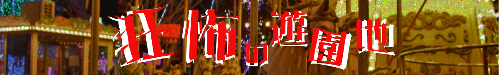

STAGE：1さぁゲームを始めよう！
ピエロが「ヒャーヒャッヒャ。」と言ってばら撒いた紙屑には
『水面に浮かぶ小舟を漂い過去の残滓を紡がせて、欠片を集め、止まりし運命廻らせよ。』
と言った意味不明な言葉が書かれていた。
タッタッタ......
ついた場所は水がかからないタイプの水上コースターだった。
『よくわかったねぇ。さあここからが第一ラウンド、その名も「DEATH CRUISING」ダヨ！』
と、なんともふざけたメモが置いてあった。
しかし乗り込まないことには始まらない、と言うことはみんなが察しているらしい。
尚史と命はおどおどしながらも船に乗り込んだ。
下の画像の謎を解き、鍵のありかをキーワード欄に入力しよう。
困ったときは、ヒントがある。なるべく見ないようにゲームを進めていこう。
STAGE：2パスワードを探せ！
数分後
私たちの予想は裏切られることになった。
私は訳も分からずだったが、スマホの画面をよく見ると一瞬でその疑念はふきとんだ。
観覧車の制御室にピエロが入っていくところを目撃したからだ。
光はついていてしっかりと回転する観覧車がそこにはあった。
しかし、何か嫌な予感がしたのか、尚史は命の頭を押さえてしゃがみこんだ。
私は訳も分からずだったが、スマホの画面をよく見ると一瞬でその疑念はふきとんだ。
私もびっくりしたが、彼らはそれ以上だっただろう
明確な死の権化が視認できる場所にいるのだから。
程なくして、観覧車が止まりピエロが出てきた。
ピエロは幸いなことに反対方向に去っていった。
制御室に入って電源を入れるにはパスワードを入力しなければいけなかった。
STAGE：2パスワードを入力
STAGE：3ピエロの目的
暗闇の中、携帯のライトだけを頼りに進んでいくと
『オメデトウ！これで最後ダヨ！』というふざけたメモと共にスイッチが置いてあった。
「どうせ押さなきゃ終わらないんだ。」そういうと尚史は、勢いよくスイッチを押した。すると、電気が勢いよくついた。
周りは鉄格子に囲まれていた。どうやって閉めたのか、出口もなくなっていたが壁の一部にまたもや謎があった。